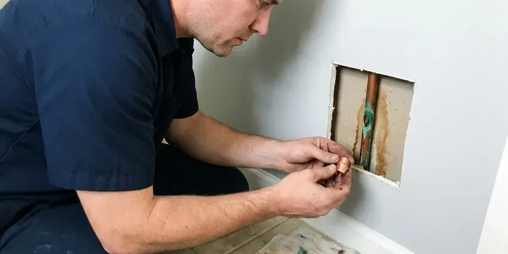

Water Softener Repair in Rochester, MN
CNV Plumbing repairs water softeners in Rochester, MN before scale gets into the water heater.
- Fast Softener Testing
- Resin Replacement
- Valve and Resin Repair
- Most Brands Repaired

Need Water Softener Repair in Rochester, MN?
We find out why your softener stopped working and quote a flat price before any repair.
Rochester, MN Water Softener Repair by Trained Techs
CNV Plumbing diagnoses and repairs softener problems throughout Rochester, MN, from fouled resin to a crusted brine tank. Hard water is hard on a house. Fixing the softener protects every appliance and fixture that scale would otherwise wear out.
Work we handle every week:
- Motor and circuit board replacement
- Injector, brine line and float cleaning and repair
- Control valve seal, spacer stack and piston replacement

Additional Plumbing Repair Services in Rochester, MN
We offer expert plumbing repair services across Rochester, MN to stop leaks, clear blockages, and keep every fixture working the way it should.


Customers
Why Choose CNV Plumbing for Water Softener Repair in Rochester, MN?
Softener repair needs a plumber who knows Minnesota water. CNV Plumbing has that background and works quickly. Grain hardness, iron content and chlorine levels change how a softener should be set, and a repair without the right settings just brings the hard water back in a few weeks.
- Brand Experience, Our plumbers know the valve heads in most home softeners and carry the common seals.
- Prompt Visits, We respond fast so scale has less time to build.
- Clear Explanations, You get a plain explanation of the problem and the options before work begins.
Citywide Coverage
Garage, side yard or utility room, we repair softeners wherever they sit in Rochester. Same-day and next-day appointments are common.
Experienced Team
Plumbers on our team are trained specifically on softener systems, covering most brands and models. Training on new equipment is ongoing.
Safety-First Approach
Softener repairs follow plumbing code for bypass valves, drain line air gaps and backflow protection. The drain line discharges safely and cannot siphon back.
Trusted Certified Rochester Plumbing Services Professionals
At CNV Plumbing, we take pride in licensed, certified plumbing services throughout Rochester, MN. Credentials matter in this trade. Our plumbers hold recognized industry credentials, and they follow strict safety and quality rules on every repair, installation and maintenance call we run.
Call Us Now PHCC Plumbing Contractor Recognition
PHCC Plumbing Contractor Recognition Better Business Bureau (BBB) Accreditation
Better Business Bureau (BBB) Accreditation Angi Certified Pro
Angi Certified Pro ISO 9001 Quality Management Certification
ISO 9001 Quality Management CertificationSoftener Repair Work in Rochester, MN
Softener Repair vs Replacement Cost in Rochester, MN
Most softener repairs cost $150 to $450, while a resin replacement often runs $400 to $900 depending on tank size. Installing a new quality softener usually runs $1,500 to $3,500. Sound tank and valve, repair wins. If the valve is obsolete and parts are scarce, replacing the head or the whole unit may make more sense than chasing used parts online.

Commercial Water Softener Repair in Rochester, MN
Laundromats and restaurants in Rochester, MN run through soft water fast, and a dishwasher or boiler starts scaling the moment the softener stops working. Every day of downtime costs money. CNV Plumbing repairs commercial-grade softeners, from twin-tank setups to big valve heads. Work can be done after hours.
Emergency Water Softener Repair in Rochester
A softener stuck in regeneration can run water to the drain for hours or flood a utility room. Urgent calls like that get priority. The crew in Rochester puts the unit in bypass first, then finds out whether the valve, the timer or the drain line caused it. Usually a stuck piston or a dead motor is to blame, and both can be replaced the same day.
Water Softener Leak Repair in Rochester, MN
Drips around fittings waste water. We trace it to the seal, O-ring, hose or internal part that failed. We replace the failed part with silicone-lubricated O-rings rated for potable water in your Rochester, MN home and pressure test the connection.
Brine Tank and Salt Bridge Repair in Rochester, MN
A crust of salt across the brine tank stops regeneration, and hard water shows up at every tap within a day or two. The bridge gets broken up and the tank cleaned out. Older brine tanks can crack, and we repair or replace those too. Keep the salt about half full.
Hard Water Symptoms and Diagnostics in Rochester
Scale on faucets means trouble. CNV Plumbing checks hardness at the tap, inspects every component and gives you a repair plan for your Rochester home. We test hardness before and after the repair, so you see the grains per gallon fall.
Control Valve Rebuild in Rochester
Service, backwash, brine and rinse are the four cycles the control valve directs every time the softener regenerates, usually in the middle of the night. Over the years, seals, spacers and pistons wear down. Leaks at the valve or water running to the drain are common signs. The valve gets rebuilt with the kit made for it.

No-Salt Water Conditioner Repair in Rochester, MN
No-salt conditioners do not remove minerals, they change how scale forms, but they still need service. Scale returning or a drop in water pressure usually means the conditioning media is spent or the sediment prefilter is clogged. CNV Plumbing repairs these units in Rochester, MN. The media wears out in a few years.
Water Softener Repair Near Me in Rochester, MN
Searching for water softener repair near me in Rochester, MN mostly turns up salt delivery. CNV Plumbing sends an actual repair tech, usually within a day. We rebuild valves, replace resin and fix brine problems on the spot, and we carry the parts for the brands most common in local homes. Soft water returns fast.
Local plumbers at CNV Plumbing understand Minnesota water and the appliance damage it causes in Rochester homes. Repairs are set up for the water you actually have.
CNV Plumbing at a Glance
- Fully licensed plumbing team covering Rochester, MN
- Same-day appointments and 24/7 emergency response
- Upfront, flat-rate pricing before work begins
- 4.8-star rated by 501+ Minnesota customers
Rochester Map
Rochester Information
- Population
- 122,413
- Area codes
- 507/952/612
- Service area
- Rochester and communities within 40 miles
- Nearby
- Lakeville, Apple Valley, Eagan, Burnsville
Water hardness changes from place to place in Rochester, MN, and a working softener protects pipes and appliances while making the water easier on skin and laundry.
Talk to a Plumber
Reach out to CNV Plumbing for honest, reliable plumbing from people who know the trade in Rochester, MN.
Our Specialized Plumbing Services in Rochester, MN
At CNV Plumbing, we handle the full list of plumbing services across Rochester, MN. From leak detection to full system installs, our team works fast and charges fair prices on homes and commercial properties alike. Here are the core services we offer:


Our Water Softener Repair Process in Rochester, MN
CNV Plumbing follows the same simple steps on every softener repair in Rochester, MN.
Request a Visit
Call (612) 712-9569 or use the online form to book a visit. We ask about the brand and the symptoms.
Diagnosis
A CNV Plumbing plumber arrives on time and inspects the softener. We test to find the cause.
Options and Pricing
We explain the problem in plain language and give you a flat price. You choose before work begins.
Frequently Asked Questions About Water Softener Repair in Rochester
Minor repairs in Rochester, MN, like a sensor or a drive motor, usually run $150 to $350. A control valve rebuild or a resin replacement can land between $400 and $800 or more, depending on the brand, the tank size and how much resin it holds. You get the price first.
Adding salt and cleaning the brine tank are fine to do yourself. Most other repairs are better left to CNV Plumbing.
Scale on faucets and laundry that feels stiff are the first clues. Salt use that suddenly jumps or stops, constant regeneration, odd noises or a leak at the unit are the others.
Most repairs take one to three hours when the parts are on hand. A full resin replacement or a major valve overhaul can take longer.
A clogged drain line or a failed control valve stops a lot of softeners. Salt bridges, worn-out resin, power outages that wipe the timer settings and mineral buildup inside the valve body cause most of the rest. Testing finds which one.
Breaking up a salt bridge or cleaning the brine tank is a reasonable DIY job. Valve, injector and resin work is easier for a tech with the parts on the truck.
Yes. CNV Plumbing warranties both labor and replacement parts on every softener repair, and the terms come in writing at the time of service.
Returning hardness is the main one, with spots on dishes and dry skin and hair. Odd salt use, a noisy regeneration, a leak or no regeneration also point to trouble.
What Our Customers Say About Our Plumbing Experts

Karen W.
After our third pinhole leak in copper, we stopped patching. CNV Plumbing gave us a written plan room by room and repiped the house in PEX while we stayed in it. The crew covered our floors every morning and cleaned up every night.
Repiping · Apple Valley, MN
Carlos V.
Our house still had galvanized pipe, and upstairs the shower was a trickle. The crew repiped everything in PEX over three days and patched every drywall hole before they left. The pressure difference is night and day.
Repiping · Rochester, MN
Lisa C.
Water was pouring out from under the washing machine on a holiday weekend. CNV Plumbing talked me through closing the valves over the phone and had a plumber at the house within ninety minutes. It was a burst fill hose.
Emergency Plumbing · Rochester, MN
Paul B.
Our pit pump ran nonstop even in dry weather. The plumber found the check valve was stuck open, so the same water kept cycling back into the pit. New valve, new float switch, done in an hour. It runs quiet now.
Sump Pump · Bloomington, MN
Monica A.
Our water bill nearly doubled in one month with no change in how we used water. The tech checked the meter, heard the leak under the hallway with his equipment, and opened a hole about a foot square. Fixed the same day.
Slab Leak Repair · Rochester, MN
James P.
Our restaurant had a slow leak at the hand sink that was rotting the cabinet base. CNV Plumbing came in at six in the morning before prep, replaced the trap and both supply lines, and was packed up before my first cook clocked in.
Commercial Plumbing · Woodbury, MN